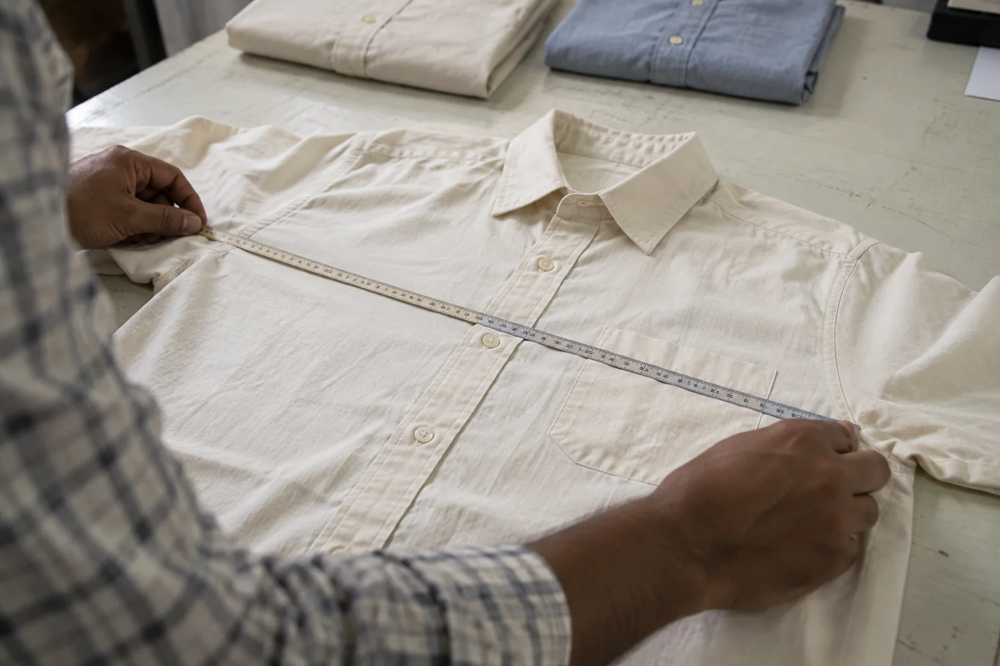
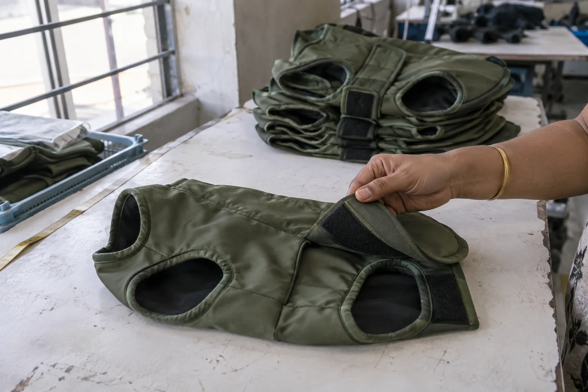
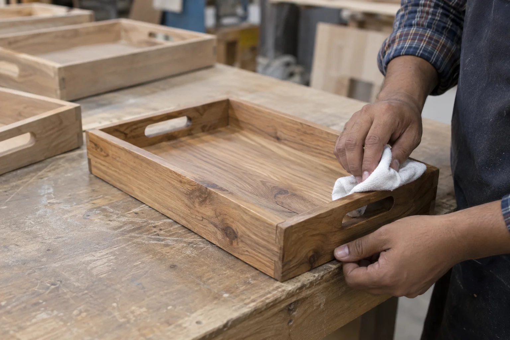
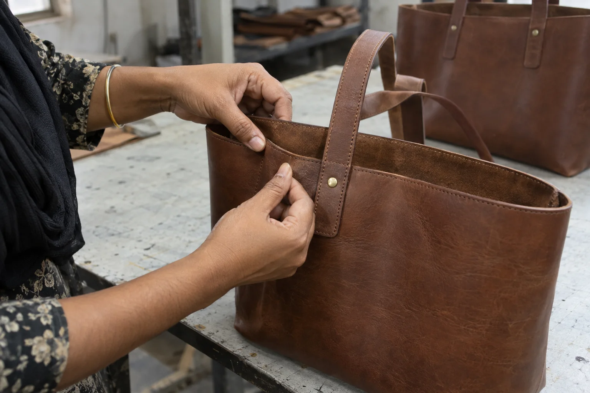
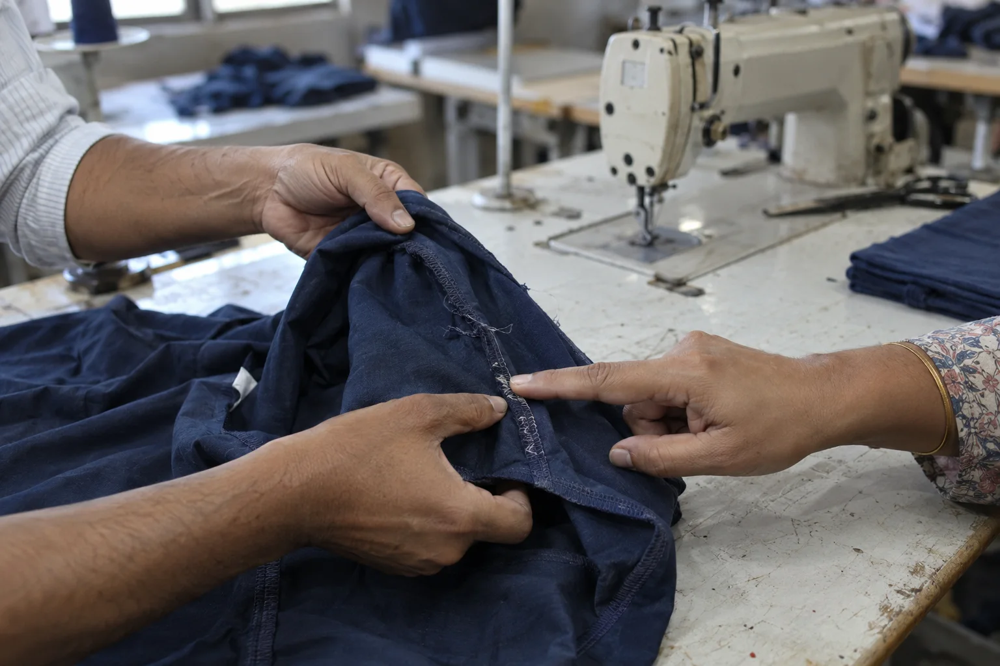
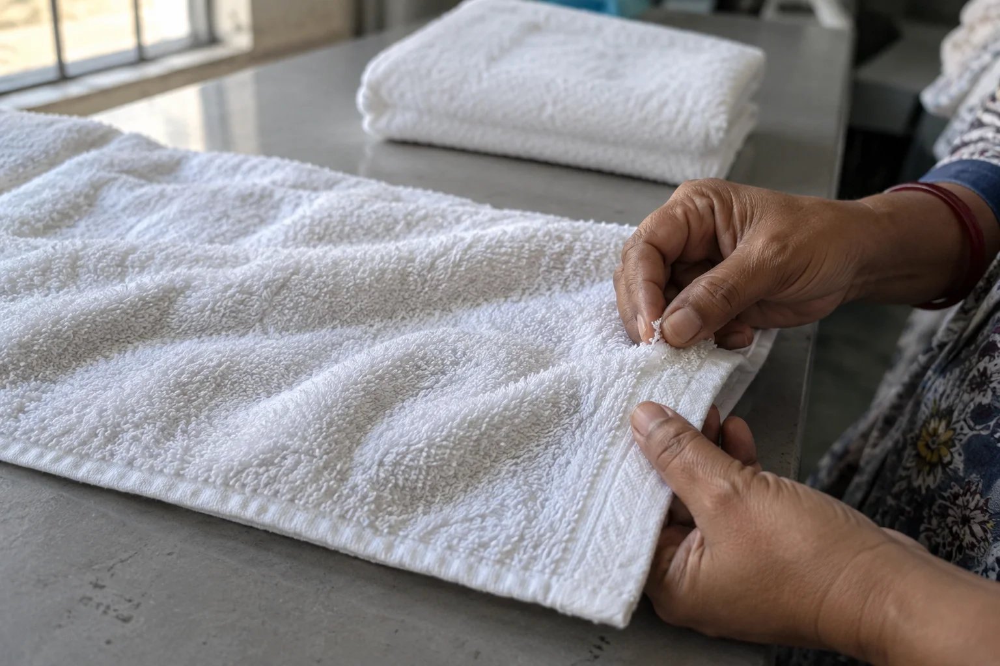
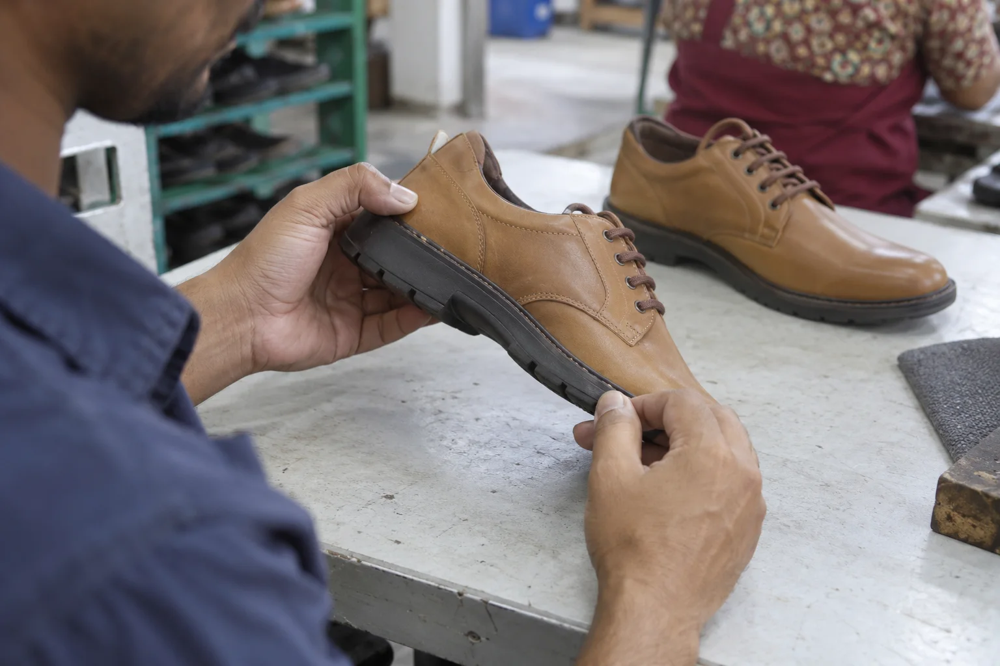

AQL sampling inspection in India
Whether the order is apparel, accessories or a manufactured product, the question is the same: does the finished lot meet the quality level you agreed before it leaves India?
Send your brief by email or WhatsApp, choose what suits your team.

Best suited to: a finished production lot needing a documented, sample-based quality decision. The sampling plan and checks are tailored to the product and buyer brief. Need a check at another production stage? See third-party inspection.
The inspection
Check the lot against what you actually ordered
Before the visit, we align on the product, quantity, approved reference, buyer specification, defect priorities and acceptance limits. The inspection scope is then applied to a sample drawn from the available production lot.
Appearance & workmanship
Visible finish, material consistency, stitching, construction, hardware and other product-specific details.
Specifications & function
Agreed dimensions, components, labels and practical function checks that can be performed on site.
Packing & order details
Assortment, quantity, packaging and carton presentation where these form part of the agreed scope.
Important: AQL (Acceptance Quality Limit) is a parameter used in an acceptance sampling plan, not a guarantee that every unit is defect-free. The sampling plan, defect definitions and pass/fail limits should be agreed before inspection. If you do not yet have these, we can discuss the right scope for your order.
A clear sequence
From buyer requirements to an actionable finding
Define the standard
Share the purchase order, product specification, approved sample and any known quality concerns.
Inspect at the source
We visit the production location, identify the available lot and inspect an agreed sample against the checklist.
Review the findings
Use documented observations and photographs to decide whether to accept, correct or investigate further.
Product-specific evidence
The sampling plan stays disciplined; the checks change with the item
Inspection is useful when the acceptance decision connects to the product the buyer actually ordered. We translate the approved reference and specification into practical checks that can be completed at the factory, while clearly separating on-site observations from specialist laboratory testing.



Across product categories
One sampling discipline, different product checks
A garment may call for measurements, seams and labelling. A manufactured metal or wood item may call for dimensions, finish, assembly and packing. Footwear and leather goods bring their own material and workmanship questions. The AQL method provides a decision framework; the checklist must fit the item.
We welcome briefs for apparel and cotton goods, pet clothing, outdoor products, footwear, leather goods and manufactured home or décor items. We confirm the product-specific checks and on-site capability before accepting each assignment.
What to send us
Start with the essentials
- Product and supplier/factory location in India
- Order quantity and expected completion date
- Specification, approved sample or reference photos
- Your critical, major and minor defect priorities, if already defined
- Packing instructions and any buyer-specific tests
We can then confirm a suitable inspection scope and quote.
Before the visit
Details that make an AQL result more useful
Agree the lot and sampling basis
Confirm the order quantity, finished quantity available, sampling standard, inspection level and acceptance limits before the inspector arrives. If production is incomplete or goods are not presented as agreed, the limitation should be visible in the findings.
Define defects in buyer language
A critical, major or minor defect should reflect the product and its intended use. Known concerns, such as shade variation, loose stitching, sharp edges, unstable assembly or incorrect labels, should be identified in advance rather than left to assumption.

A decision-ready brief
Tell us what would make the order unacceptable
AQL numbers alone do not define quality. Before the visit, the inspector needs to know which defects affect safety, saleability, function or your brand promise. A loose seam on pet clothing, a sharp metal edge, unstable wood assembly and a shade variation on cotton goods do not carry the same risk.
Useful inputs include:
- approved sample or clear product photographs;
- measurement chart, material and construction requirements;
- defects seen in earlier samples or shipments;
- label, assortment and packing instructions; and
- the sampling standard and acceptance limits your team uses.
When those details are still incomplete, send what you have. We can identify the questions that should be settled before the inspection is booked.
Need an inspection quotation?
Email or WhatsApp the product, total order quantity, factory city and planned shipment date. Include relevant specifications or reference photos.
More product-specific examples
Cotton and footwear checks in context
The product determines which visible details matter in the sampled lot. These examples show why towel finishing and footwear construction need different inspection questions, even when the buyer uses the same sampling framework.


Common questions
AQL inspection, in practical terms
Is AQL inspection the same as checking every unit?
No. It examines a defined sample from a lot using agreed acceptance limits. If 100% checking is needed, that is a different scope to discuss.
When should I book it?
Usually when the goods are sufficiently complete and available for a meaningful final inspection, before shipment is released. Share your production and shipping dates so timing can be planned.
Can the checklist be tailored to my product?
Yes. Buyer specifications and approved references should drive the checks; the exact on-site scope is confirmed before the visit.
Related services
Know what is in the lot before it leaves
Tell us the product, factory location and target shipment date.
Email is useful for specifications and attachments; WhatsApp is convenient for quick questions and photos. If you do not receive an email reply, please follow up by WhatsApp or phone.